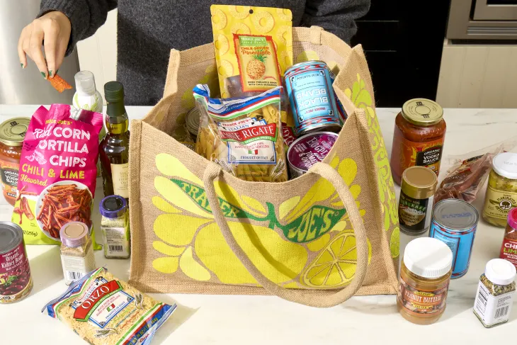
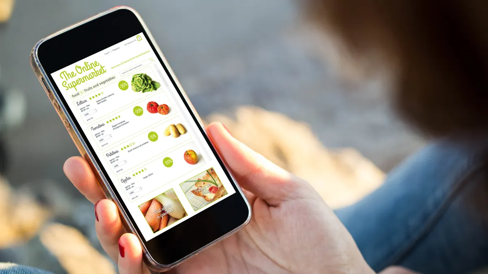
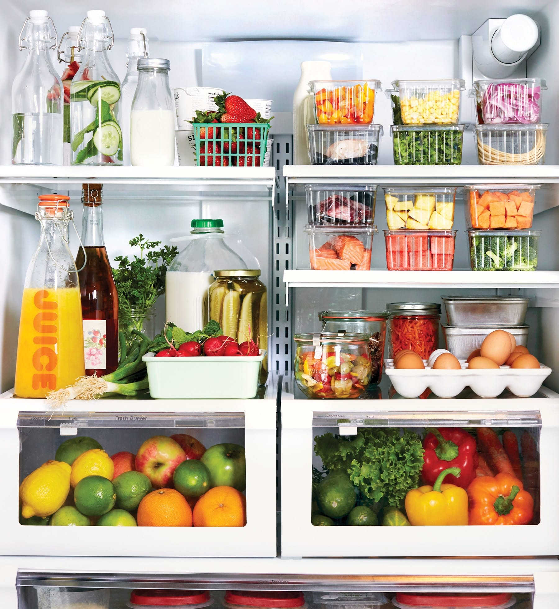

About FreshTrack
FreshTrack is an app that helps people keep track of the groceries they have at home and reminds them before something expires.
The idea behind FreshTrack is to make it easier for people to remember what food they already have and avoid throwing away groceries that were forgotten in the fridge or pantry.
The main goal of FreshTrack is to help people save money, stay organized, and reduce food waste.

Features
FreshTrack would include several features to make keeping track of groceries easier.
- Scan grocery barcodes
- Add food items manually
- Track expiration dates
- Receive reminders before food expires
- Organize groceries into categories
- See which foods should be used first
One of the most useful features would be the expiration reminder, which would alert users before food goes bad.
How It Works
Using FreshTrack would only take a few simple steps.
- Open the FreshTrack app.
- Scan the barcode of a grocery item or add it manually.
- Enter the expiration date.
- Save the item to your grocery list.
- Receive a reminder when the food should be used soon.
- Remove the item after it has been used.

Why FreshTrack?
Reduce Food Waste
People sometimes forget what they already have in their refrigerator or pantry. FreshTrack could help remind users to use food before it expires.
Save Money
Throwing away unused groceries also means wasting money. Keeping track of expiration dates could help people use more of the food they buy.
Stay Organized
FreshTrack would give users one place to see what groceries they already have and which items should be used first.

Learn More
Food safety is also an important part of storing and managing groceries. Learn more from the FDA .
You can also learn more about preventing wasted food at home from the EPA .